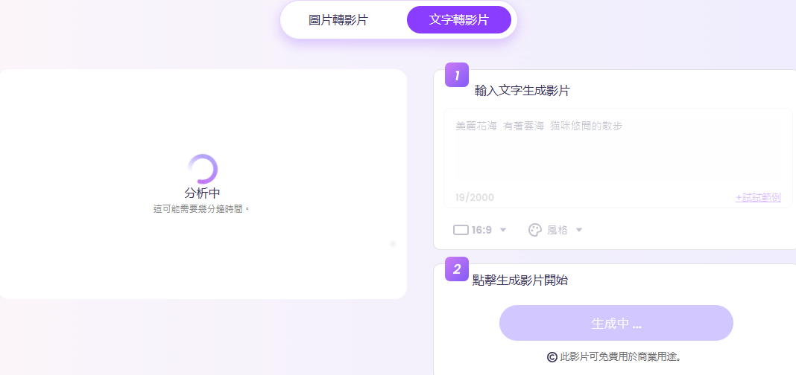

AI 免費文字轉影片
這是一種利用人工智慧技術，將輸入的文字內容自動轉換為高品質影片的工具。
主要功能與優勢
- AI 語音合成：支援多種語言和語音風格，讓影片更具親和力與專業感。
- 虛擬人像生成：提供多種 AI 生成的虛擬人像，可用於旁白、解說等應用。
- 豐富的影片模板：內建多種專業設計的影片模板，適用於不同的場景，如行銷推廣、教學培訓等。
- 字幕與動畫特效：自動添加字幕，支援動畫效果，使影片更具吸引力。
- 雲端操作：無需下載軟體，直接在線上製作並輸出高品質影片。
使用步驟
步驟 2：點擊生成影片
AI會依照所輸入的文字內容,展示所需要的影片
成品
Vidnoz AI 幫助你節省時間與成本，無論是個人創作還是企業行銷，都能輕鬆駕馭！

注意事項
- 免費版 vs. 付費版： 免費版本可能會有影片時長、畫質或功能限制，
如有需求可查看是否有升級方案。 - 個人資訊保護： 避免上傳敏感資訊或個人隱私內容，確保數據安全。
- 字幕同步： 如果影片需要字幕，請確認字幕與語音同步，以確保觀看體驗。
返回首頁